1. First, rinse 1.5 cups of basmati rice (300 grams) in clean water until the water runs clear of starch. You can use a bowl or colander to rinse the rice. Make sure you soak the rice grains in water for 30 minutes after rinsing them.
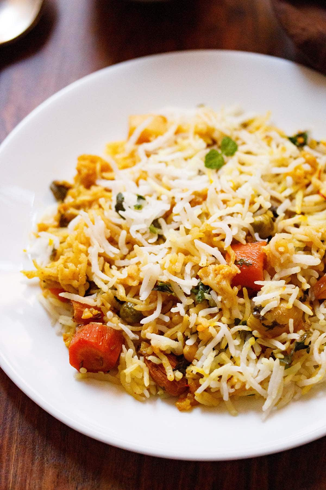
2. Once the rice has been able to soak for 30 minutes, drain all the water and set aside.
3. While the basmati rice is soaking, use that time to prep the other
ingredients. First, you will want to rinse, peel and chop all of the
veggies. This will make the process of cooking go by much quicker.
What to use: I have used 3 cups mixed veggies including green peas. You
can use your choice of mixed vegetables for your veg dum biryani.
Onion: Slice 1 large onion thinly (about 1 heaped cup thinly sliced
onion).
Ginger: Finely chop or crush 10 grams ginger (2 pieces of 2 inch ginger or
1.5 tablespoons finely chopped ginger). You should get 1 tablespoon of
ginger paste.
Garlic: Finely chop or crush 5 grams garlic (10 to 12 medium garlic cloves
or 1 tablespoon finely chopped garlic). You will need ½ tablespoon garlic
paste.
Chilies: Slit 3 to 4 green chilies.
Cilantro: Chop coriander leaves (cilantro) and mint leaves. You should get
⅓ cup each of chopped coriander leaves and mint leaves.
4. After you have organized and chopped all of your vegetables, it is time
to cook the basmati rice. You can use any method to cook your rice –
microwave, pressure cooking, instant pot or cooking in a pot.
If cooking your rice in a pot, use a deep bottomed pan and add 5 cups
water.
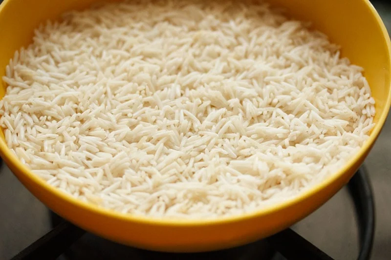
5. When the water is hot, add all the spices and 1 teaspoon salt. Here’s
what you want to include for your veg dum biryani in this step:
1 tej patta
3 green cardamoms
3 cloves
1 black cardamom
1 inch true cinnamon or 1 inch cassia cinnamon
2 single strands of mace
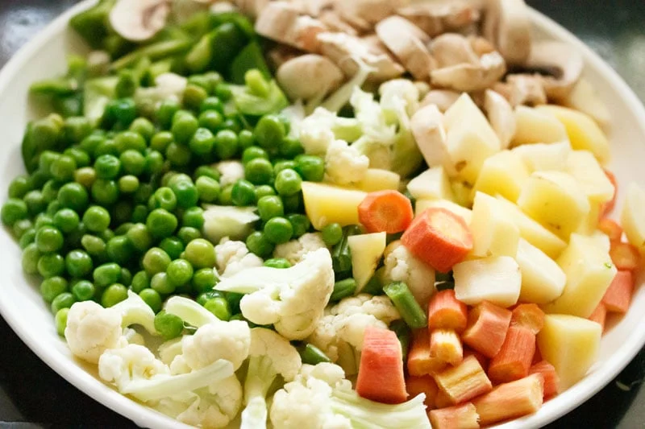
6. After adding the ingredients, bring the water to a boil on a high heat.
7. Now it is time to add the rice to the spiced water in the pot.
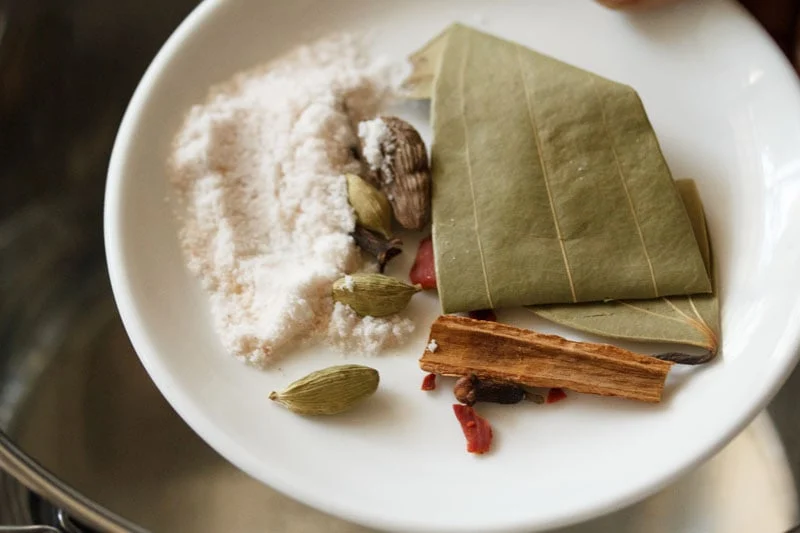
8. Gently stir with a spoon or fork after you add the soaked basmati rice. Check the taste of water and ensure it is slightly salty.
9. Do not reduce the heat and continue to cook the rice grains.
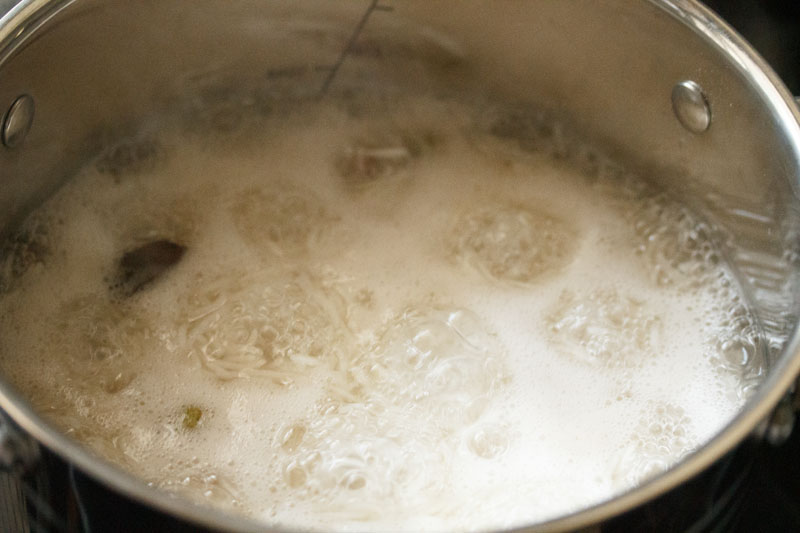
10. The rice should not be fully cooked, but a bit undercooked or about 75% or ¾ of the way cooked.
11. Drain the semi-cooked rice in a colander. You can also rinse them gently with water so that the grains stop cooking.
12. In a 2-litre pressure cooker or a pan, heat 3 tablespoons of ghee,
then add the following spices. Sauté the whole spices until they crackle.
You can make the vegetable gravy in a pan as well.
1 teaspoon shah jeera (caraway seeds)
1 tej patta
3 green cardamoms
3 cloves
1 black cardamom
1 inch cinnamon
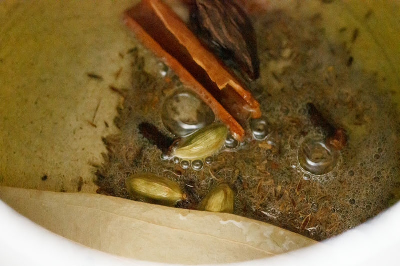
13. Next, add the sliced onions.
14. Stir and sauté the onions on a low to medium heat. Onions can take a
long time to cook, so add a pinch of salt to quicken the cooking
process.
Stirring often sauté the onions, so that they cook evenly.
16. When the onions are cooking, take 1 cup fresh curd or yogurt in a bowl. Beat the curd with a spoon or whisk until it becomes smooth.
17. Sauté the onions until they become golden brown or caramelize. Try not to burn them.
18. Add the ginger-garlic paste and sliced green chilies. You can also finely chop the ginger-garlic and add if desired.
19. Sauté the mixture for some seconds until the raw aroma of ginger-garlic goes away.
20. Add the ½ teaspoon turmeric powder and 1 teaspoon red chili powder or cayenne. Stir and mix well.
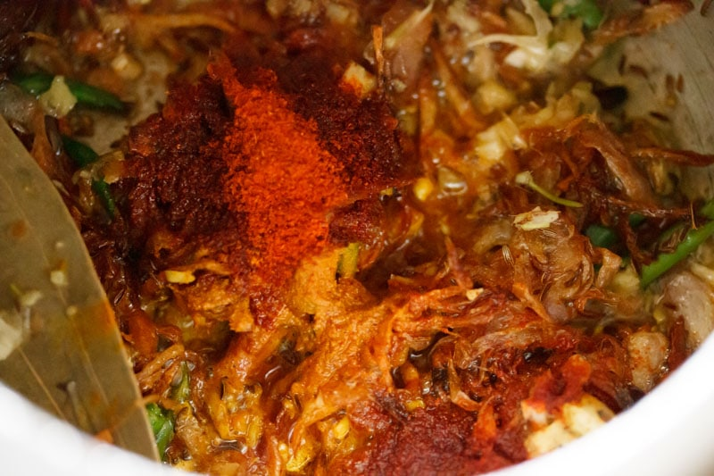
21. Next add the chopped veggies.
22. Mix thoroughly and sauté veggies for 1 to 2 minutes.Lower the heat and add the beaten yogurt or curd. Stir as soon as you add the curd.
23. Then add ½ cup of water in the pressure cooker. If you decide to cook the veggies in a pot, add ¾ cup water.
24. Season with salt according to taste and mix again.
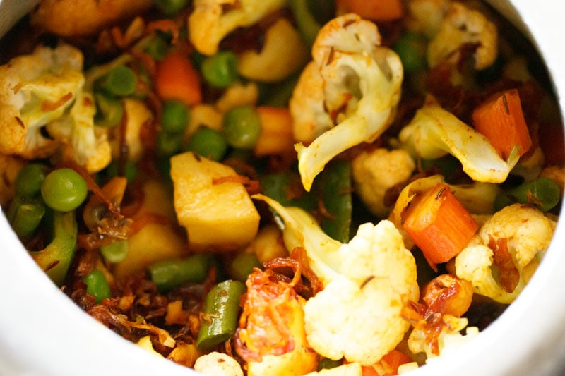
25. Pressure cook for 1 whistle or 3 to 4 minutes on medium heat. If cooking in a pot, then cook until the veggies are done. Don’t overcook the vegetables.
26. When the pressure settles down on its own, remove the lid and check
the gravy.
If the vegetables are not cooked well, then keep the pressure cooker on
the stove top and simmer the biryani gravy without the lid, till the
vegetables are tender.
If there is too much water or stock in the gravy, then simmer till some
water dries up. The vegetable gravy should have a medium or slightly thick
consistency and should not be watery.
27. Add 2 tablespoons cashews, 1 tablespoons raisins and 2 tablespoons almonds (blanched or raw) to the vegetable gravy.
28. Mix, stir, and set aside.
29. While the veggies are cooking, warm 4 to 5 tablespoons of milk in a microwave or in a small pan on the stove top. Add ¼ teaspoon of saffron strands. Stir and set aside.
30. Now in a thick bottomed pan, layer half of the vegetable curry first.
31. Then layer half of the semi cooked rice.
32. Sprinkle half of the chopped coriander (cilantro), mint leaves and saffron infused milk.
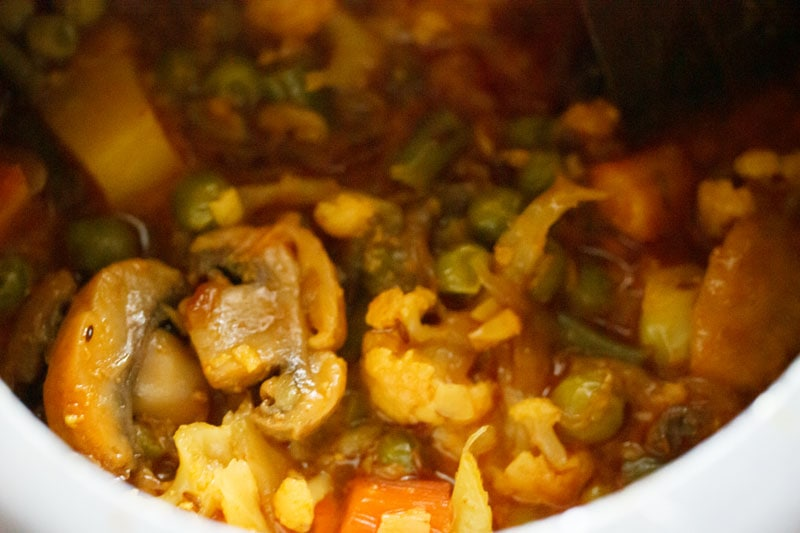
33. Layer the remaining gravy.
34. Layer the remainder of the rice, and sprinkle the remaining coriander leaves (cilantro), mint leaves, saffron milk on the top. You can also sprinkle 2 teaspoon of rose water or kewra water (pandanus extract) at this point.
35. Seal and secure the pot with aluminium foil.
36. Then cover the pan/pot with a tight fitting lid.
37. You can also seal the pan with a moist cotton cloth.
38. Then keep a lid on top.
39. Then keep a heavy weight on the lid.
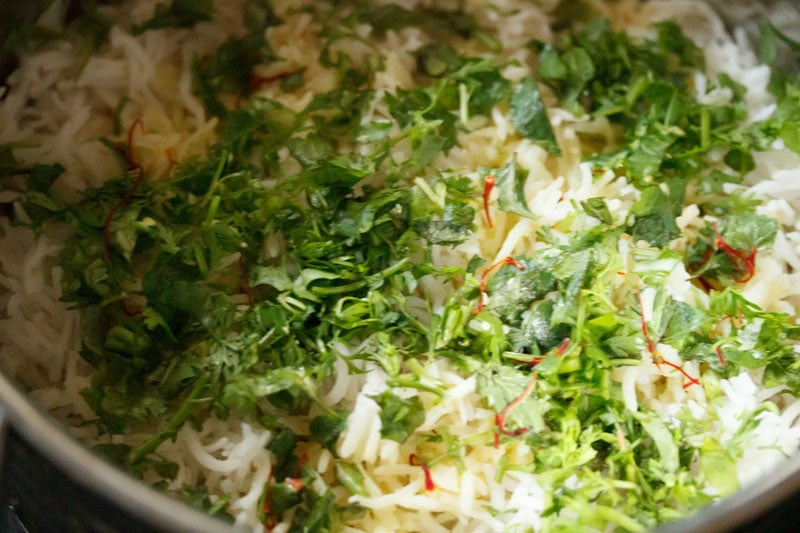
40. Take a tawa (griddle/skillet) and heat it on medium heat. You can
begin to preheat the tava when you start assembling the Hyderabadi Veg Dum
Biryani.
Lower the heat when the skillet becomes hot, and keep the sealed Vegetable
Dum Biryani pan on the tawa. Keep the flame to the lowest and cook for 30
to 35 minutes.
41. Preheat the oven to 180 degree celsius for 15 minutes and then bake
the Veg Dum Biryani in a preheated oven for 30 to 40 minutes.
Remember to use an oven safe glass bowl or casserole dish like the pyrex
bowl or use a dutch oven.
You have to assemble the Vegetable Dum Biryani as mentioned above in the
casserole dish or your dutch oven. Seal tightly with aluminium foil or an
oven safe heat resistant lid and then bake.
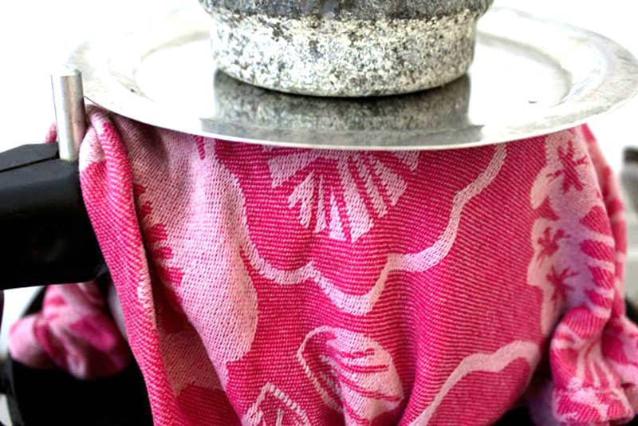
42. After 30 to 25 minutes, turn off the heat, and use a fork or spoon
check the bottom layer of the biryani. There should be no liquids at the
bottom.
If there are liquids, then continue to dum cook. After dum cooking is
over, turn off the heat and give a resting time of 5 to 7 minutes and
later serve Hyderabadi Veg Dum Biryani.
While serving the Vegetable Dum Biryani, make sure you equally serve the
vegetables as well as rice layers.